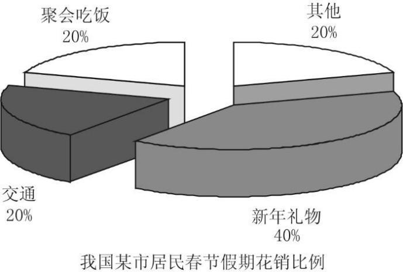

yy-2015-48
Write an essay based on the following chart. In your writing, you should
1) interpret the chart, and
2) give your comments.
You should write about 150 words on the ANSWER SHEET. (15 points)

The chart reflects the Spring Festival spending types and their respective proportions. Chinese people's money is mainly used for three purposes during the Spring Festival: traveling, New Year's gift giving and having dinners with friends or relatives. They account for 80% of total spending.
Most spending is used to maintain or facilitate interpersonal relationship. This finding is not strange, since the Spring Festival is a Chinese traditional festival for family reunion. Developing relationship is beneficial and necessary for a person's fulfillment and investing on people we love is sweet and happy.
However, we should not go to extremes. In China, there are many people fond of appearing extraordinary and hating to be known as weaker and poorer. They use handsome money to blindly pursue pride. Such intention causes huge waste of money and imposes heavy economic burden on people involved. The pride gotten by squandering money is transient and can only be a topic for gossip soon forgotten by others. Therefore, we should think rationally before opening our purses. We should remember it is happiness that is the main concern.
本题讲解：2015 大作文——春节开支饼图：排序归类读出"人情消费" → 归因 → 理性评论
答案（范文）：The chart reflects the Spring Festival spending types and their respective proportions. Chinese people's money is mainly used for three purposes during the Spring Festival: traveling, New Year's gift giving and having dinners with friends or relatives. They account for 80% of total spending.
Most spending is used to maintain or facilitate interpersonal relationship. This finding is not strange, since the Spring Festival is a Chinese traditional festival for family reunion. Developing relationship is beneficial and necessary for a person's fulfillment and investing on people we love is sweet and happy.
However, we should not go to extremes. In China, there are many people fond of appearing extraordinary and hating to be known as weaker and poorer. They use handsome money to blindly pursue pride. Such intention causes huge waste of money and imposes heavy economic burden on people involved. The pride gotten by squandering money is transient and can only be a topic for gossip soon forgotten by others. Therefore, we should think rationally before opening our purses. We should remember it is happiness that is the main concern.
第 0 步：先立机制——饼图的重心不是"变化"而是"构成"
图表作文三段各司其职，但读图动作由题型决定：柱状图/线图读趋势，饼图读构成占比——排序（谁最大）、归类（哪些同属一类）、合计（加起来到什么程度）。
| 段落 | 功能 | 判分点 |
|---|---|---|
| 段 1 interpret the chart | 图表性质 + 数据呈现 + 占比汇总 | 不是逐块报数，而是归纳出主次 |
| 段 2 归因 | 解释数据背后的人情/文化逻辑 | 归因要与数据同向：人情开支 ↔ 团圆节日 |
| 段 3 give your comments | 评价：立论 + 反面 + 建议 | 转折后要有具体情形与后果，不喊空口号 |
本题数据自己"会说话"：四个占比里三个有名目——新年礼物 40%、聚会吃饭 20%、交通 20%，合计 80%，全部指向人情往来。这就是全文的解读抓手：数据 → 现象（春节开支以人情消费为主）→ 归因（团圆节日的文化属性）→ 评论（人情消费要理性）。
第 1 步：审图表——四块数据排序、归类、合计
| 数据 | 占比 | 归类 |
|---|---|---|
| 新年礼物 | 40% | 人情往来（送礼） |
| 聚会吃饭 | 20% | 人情往来（聚餐） |
| 交通 | 20% | 人情往来（返乡团圆/出行） |
| 其他 | 20% | 其余杂项 |
排序：礼物 > 聚会 = 交通 > 其他；归类：前三项合计 80%，都是人情交往开支，与春节"团圆节"的性质相符。段 1 由此排出三个信息：图表性质（开支类型与占比）→ 三个名目 → 合计占比。范文把"交通"表述为 traveling（出行），写作时保持这一口径即可。
第 2 步：段 1 写法——性质句 + 呈现句 + 汇总句
- 性质句
The chart reflects the Spring Festival spending types and their respective proportions：reflect + types and respective proportions（各自的比例），一句说清图表"是什么"。 - 呈现句
Chinese people's money is mainly used for three purposes...: traveling, New Year's gift giving and having dinners with friends or relatives：钱作主语、is used for 被动式、冒号后同位列举三个名目——数据呈现句的标准形：先归类（three purposes）再列举。 - 汇总句
They account for 80% of total spending：account for = 占；80% 是三项合计——归类的意义一锤定音。
第 3 步：段 2 归因——判断 + 文化归因 + 意义
- 判断句
Most spending is used to maintain or facilitate interpersonal relationship：承接段 1 直接下判断——most spending 指的就是那 80%。 - 文化归因
This finding is not strange, since the Spring Festival is a Chinese traditional festival for family reunion：since 给原因——春节本质是团圆节，人情开支与节日性质同向，数据"不奇怪"。 - 意义层
Developing relationship is beneficial and necessary for a person's fulfillment and investing on people we love is sweet and happy：把"花钱维系关系"提到个人幸福与成长的高度——归因不停在文化，再落一层价值判断，段 2 才厚实。
第 4 步：段 3 评论——转折立论 + 反面情形 + 后果 + 建议
- 转折立论
However, we should not go to extremes：肯定人情消费的合理性之后，comments 的重心转向"过犹不及"。 - 反面情形
In China, there are many people fond of appearing extraordinary and hating to be known as weaker and poorer. They use handsome money to blindly pursue pride：形容词短语 fond of... 与分词短语 hating to... 后置并列修饰 people，一正一反刻画"爱面子"人群；handsome 取"大量的"（熟词僻义），pride 此处指"面子"而非"自豪"。 - 后果
Such intention causes huge waste of money and imposes heavy economic burden on people involved. The pride gotten by squandering money is transient...：impose...burden on 后果句；gotten by squandering money 过去分词定语把主语压紧；transient（短暂的）钉死"挥霍换来的面子不长久"。 - 建议
Therefore, we should think rationally before opening our purses. We should remember it is happiness that is the main concern：rationally 理性；强调句 It is happiness that... 把落点从"钱"挪回"幸福"，评论收在价值上。
高分句型（自组要点）
...is mainly used for three purposes: A, B and C——冒号同位列举，呈现句标准形。account for ...% of total spending——占比句。This finding is not strange, since...——数据 → 归因的衔接句。there are many people fond of... and hating to...——形容词短语 + 分词短语后置定语。impose heavy economic burden on people involved——后果句。The pride gotten by squandering money is transient——过去分词定语 + 表语判断句。It is happiness that is the main concern——强调句收尾，落点钉在价值上。
易错点
- 逐块报数不分主次：四个数字平铺没有归纳——interpret 的核心是"排序 + 归类 + 合计"，80% 这个数比四块罗列更有信息量。
- 段 2 复述数据不归因：只说"钱都花在人情上"不回答 why（团圆节的文化属性），归因段就空了。
- 段 3 只夸不评 / 只批不建：评论三层（不过极端 → 极端情形与后果 → 理性建议）缺层即不完整。
- pride 词义用偏：本篇 pride = 面子/虚荣（pursue pride 追面子），按"自豪感"写会跑偏。
- handsome 熟词僻义：handsome money = 大量的钱，不是"英俊"。
- 合计说成单项：80% 是三项合计，写成单项占 80% 是数据硬伤。
- 强调句写错：It is happiness that... 的强调句须用 that，写成 which 不成立。
记忆锚点：饼图解读 = 排序 + 归类 + 合计；三段 = 解读（性质 + 呈现 + 占比）→ 归因（判断 + 文化 + 意义）→ 评论（转折立论 + 反面 + 后果 + 建议）；account for 占；handsome = 大量的、pride = 面子；It is... that... 强调句收尾。